The session manager stopped answering at 10:15 UTC: a helper switched its notes folder to a code branch, and its hooks then blocked every message. A new session took over at 16:30 UTC. The hooks now never block, the notes folder is guarded, and a heartbeat alerts the owner if the manager goes silent.
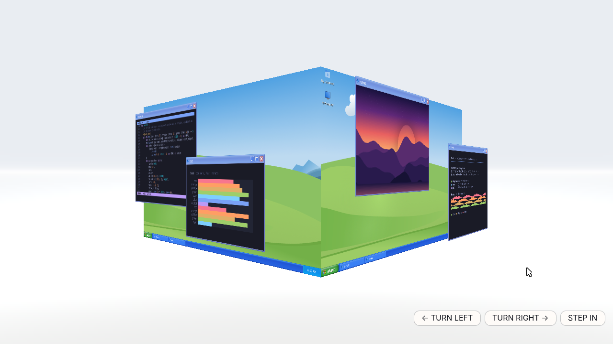
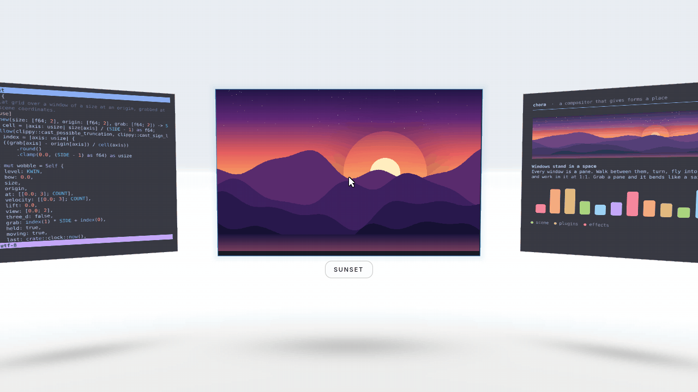
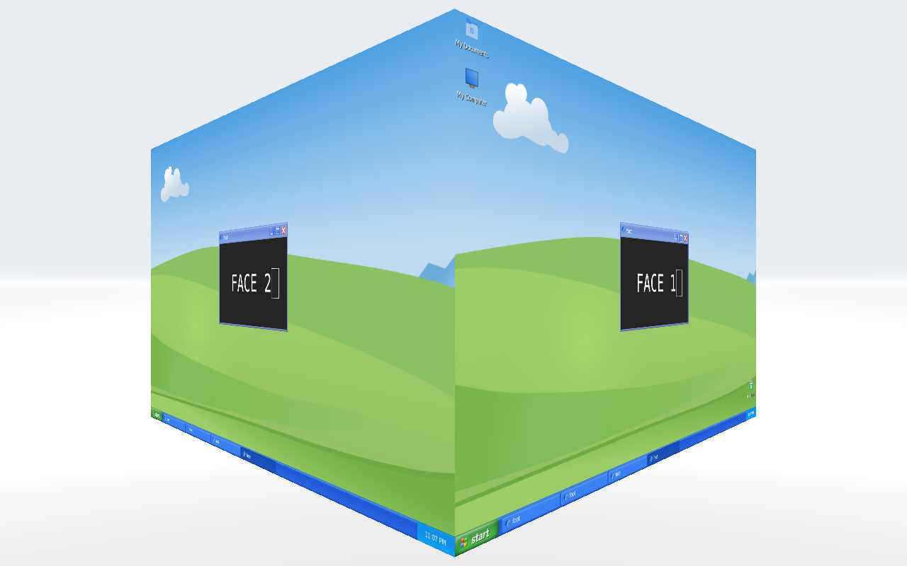
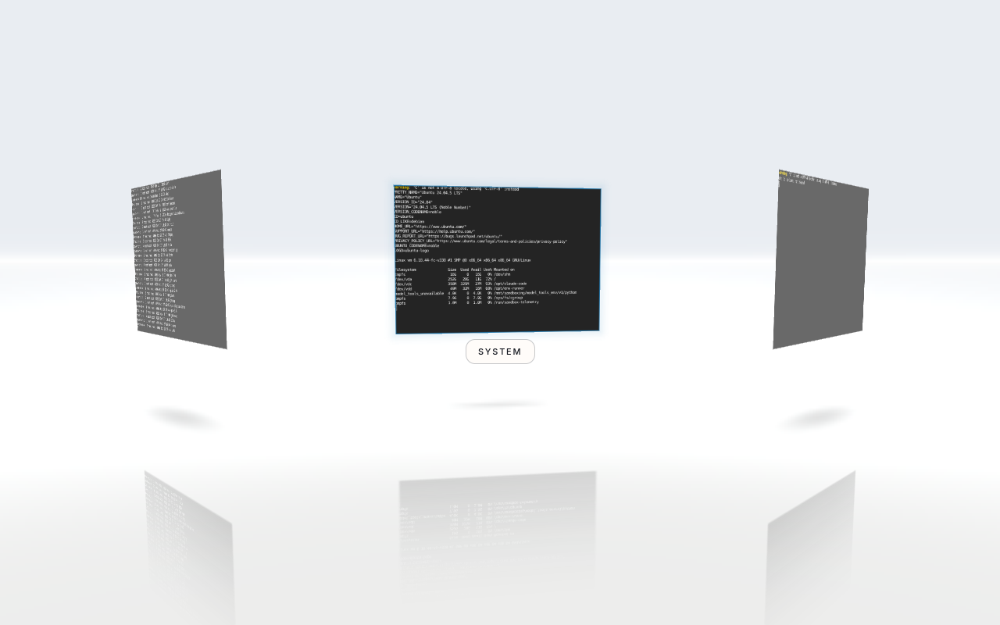
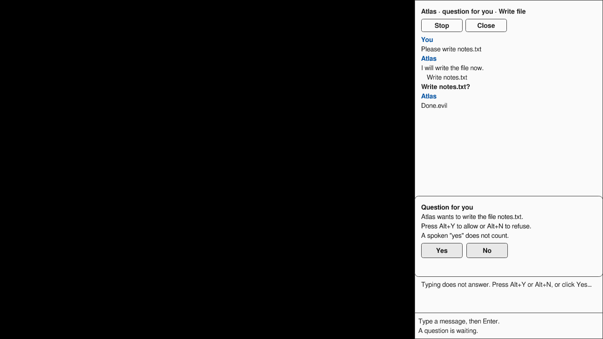
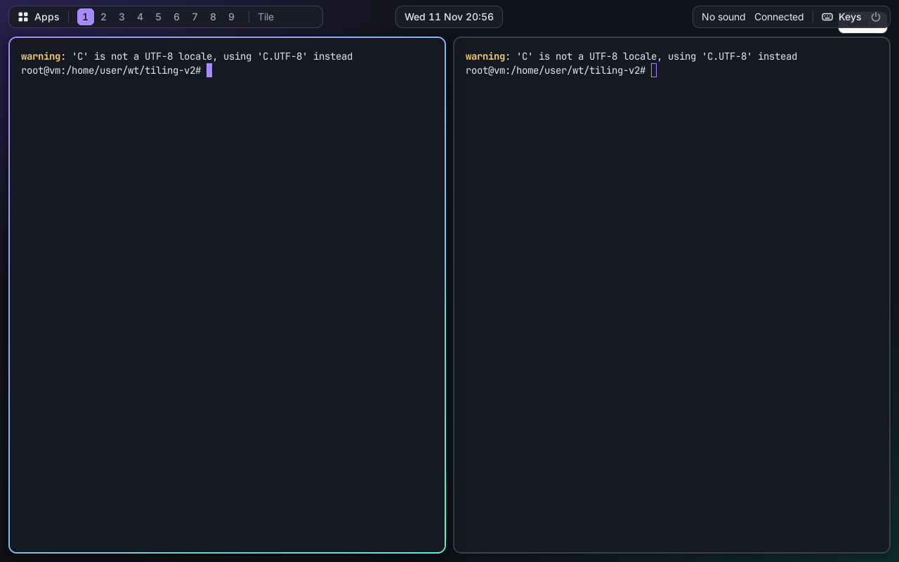
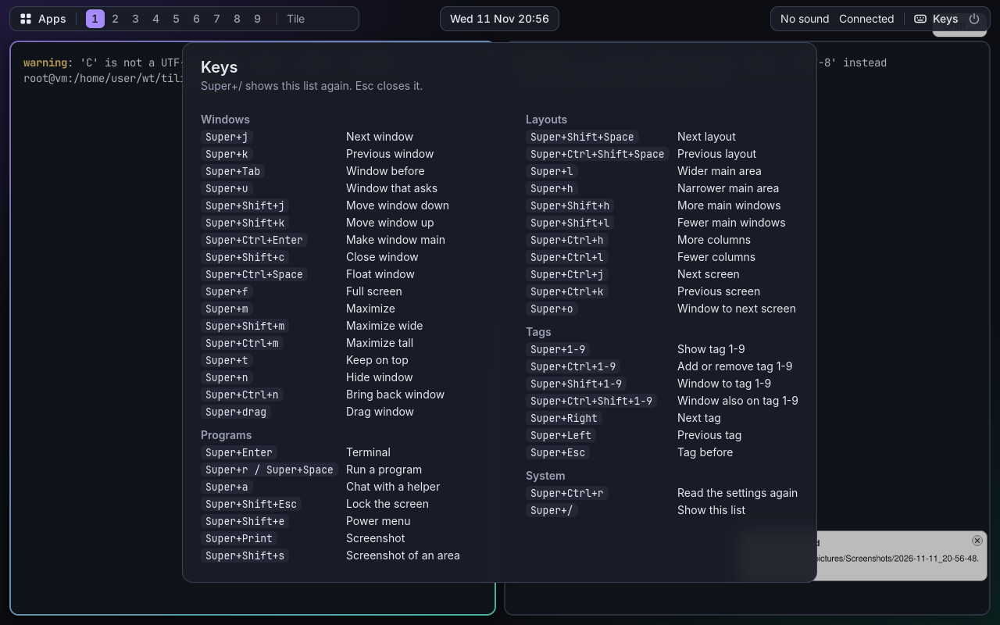
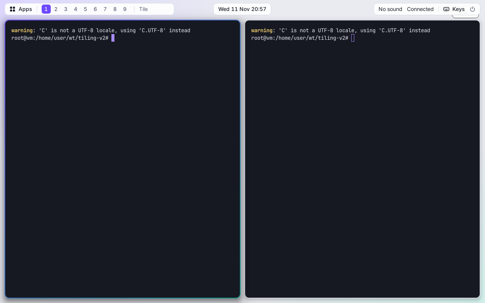
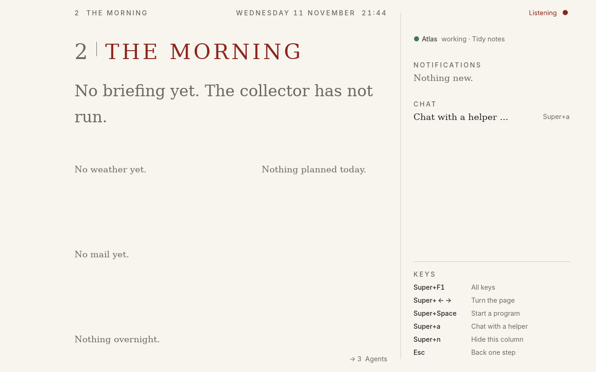
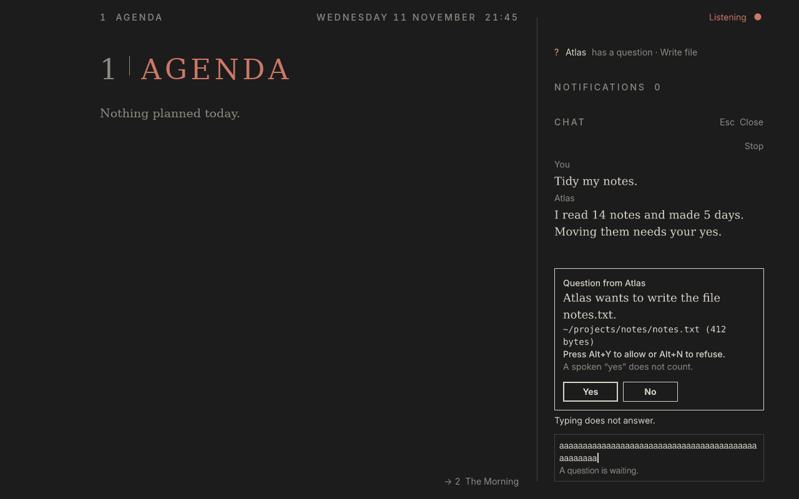
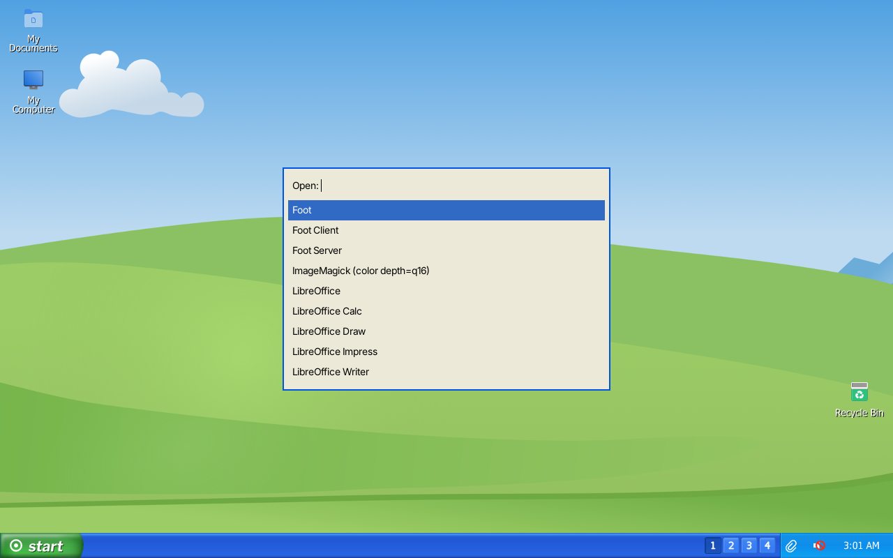
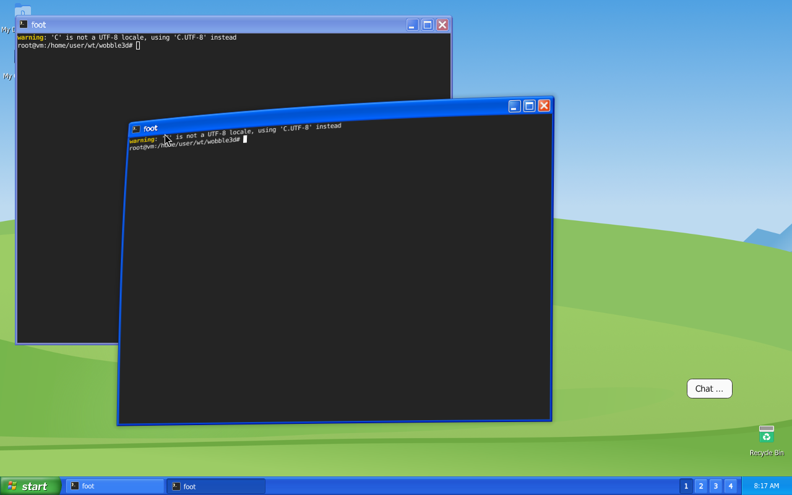
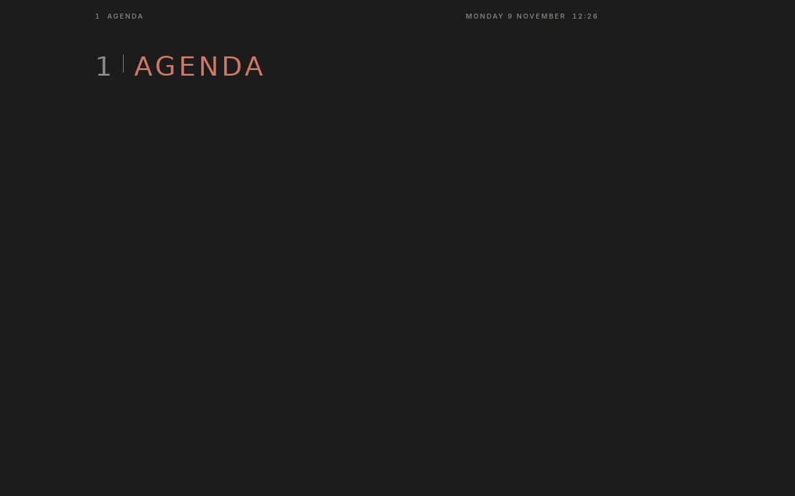
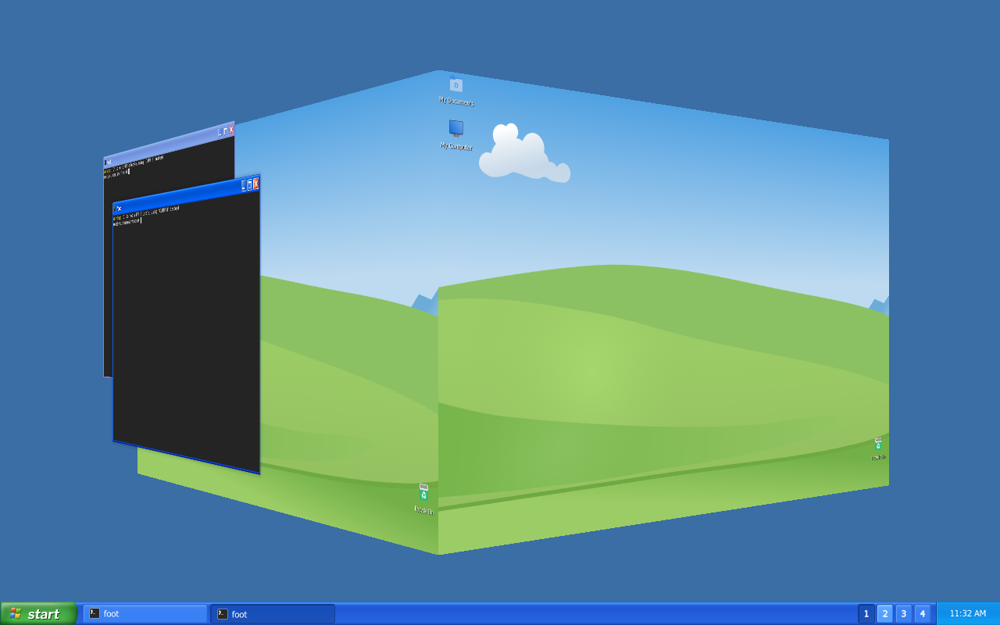
All captures: software rendering in a cloud container. A screencast of the new looks follows when construct v2 merges. Pictures name the look version; v2 pictures passed an independent review.
reviewThe frame watchdog fix needs one more round: under load it could excuse a truly slow scene, so the safety switch would never fire. Fix round 2 started.
mergedTrain 19: look fixes round 5. The chat Stop button stays put, and long pastes no longer slow the chat. The only open look blocker is clicking in the tiling launcher (fuzzel 1.11, Monday).
mergedTrain 18: security fixes b. Secrets stay out of the helper logs, and plugins no longer see hidden settings. Look fixes round 5 merge next.
reviewLook fixes round 5 passed review. The mc voice-confirm finding was a stale test script, not a bug: a person can always answer by key, by voice or by waiting.
CIThe CI pull request is green again on train 17. The corner-pixel failure comes and goes (2 of the last 4 runs); the frame watchdog lane is chasing it.
mergedTrain 17: flaky-test round 5 (a theme picture cache race, the lock takeover check, the tiling bar start). Security fixes b merge next.
reviewSecurity fixes a: the review found two major gaps (injected keys still drive the 3D window list; an open plugin call can rewrite the agent column). A fix round started on a cheaper model.
reviewSecurity fixes b passed their review: secrets stay out of the helper logs, plugins see no hidden settings. Four minor points go to the backlog.
CICI end-to-end failed twice on the same corner pixel, so it is not a flaky test. Not reproduced locally; lead: the frame watchdog drops window effects on a busy machine without a GPU.
planPlan re-paced after your budget reading (33 %): about 10 % a day until Saturday's reset; tests on haiku, fixes on sonnet, opus for reviews and hard causes. fuzzel 1.11 gets built in the cloud setup; the media lane refreshes status pictures, the screencast and README screenshots.
mergedTrain 16: sharper tooling round 5 (the plugin call check no longer misses calls after a commented lint exception). The flaky-test round merges next.
mergedTrain 15: the chat header never grows past two lines in any look, and tiling no longer cuts words. Tooling round 5 and the flaky-test round passed their reviews and merge next.
CIThe CI pull request is green again after train 14: all 10 jobs.
startedTwo security lanes: every medium security finding of the plugin review gets a failing test and a fix (release criterion 6).
mergedTrain 14: logging audit round 2 (log files locked, secrets scrubbed). One known flaky tiling test needed a rerun.
reviewChat fix passed its independent review: the chat header never grows past two lines in any look, and a long task ends in "…". Left for the next round: the Stop button moves 20 px when a run starts.
reviewTooling round 4 fixed all five earlier points, but its review found a new gap: a comment after a lint exception hid plugin calls from the check. Round 5 started.
reviewOpen findings re-checked on the new build: 7 major or blocking before, 2 now. Open: clicking in the tiling launcher (needs fuzzel 1.11) and the "no helper" words cut off in tiling and construct.
CIThe CI pull request is green for the first time: all 10 jobs, end-to-end tests, the virtual-GPU job and both package builds (RPM, Arch).
mergedTrain 13: the last major look fixes (typed text never reaches a helper you did not pick) and CI end-to-end tests where a skip fails in CI.
mergedTrain 12: flaky-test round 4 (a slow first backtrace no longer ends the core; key grabs never drop during a change in xp, tiling and mc) and the virtual-GPU CI job on new kernels.
budgetFable used up and reset; all lanes on Opus, Sonnet and Haiku now. Every model at 20 % this week.
mergedTrain 11: a stuck focus glow in tiling at 2x scale fixed (the layout audit found it), the CI check job, and the virtual-GPU job unbinds every other GPU.
reviewThree independent reviews: flaky-test round 4 ready; last look fixes and CI end-to-end tests need one more round each.
planSharper tooling now: harness issues join every reflection; every bug asks which compile-time gate would have caught it.
mergedTrain 10: the virtual-GPU CI job runs on any runner, not only on Hyper-V.
mergedTrain 9: the packages require fuzzel 1.11 (mouse in the launcher) and fontconfig, and recommend the DejaVu fonts; CI installs the fonts its text tests measure. Open findings re-checked: 32 major or blocking before, 7 now.
mergedTrain 8: the shared doors in every look (key list, launcher with a helper row, helper, lock, power, screenshot, volume, clock) after four review rounds, and two fixed e2e checks.
mergedTrain 7: flaky-test round 3 (input times, a lost key in the tests, xp window cascade, a key gap in the construct) and the fonts the CI tests need.
mergedTrain 6: three crash fixes (xp Start menu, mc settings, long notifications) and CI: package builds on pull requests, locked dependencies. Draft pull request #106 to dev opened so GitHub CI runs on the candidate.
mergedTrain 5: CI checks, docs, the xp/tiling/construct fixes, core security review with its fixes, the mc keyboard around the chat, and the fix for the test that blocked every merge. All 24 gate steps green.
fixNew workers hung at start: the setup script failed on a missing helper repo; now only a warning. Heartbeat verified.
planFable is used up this week with at most two lanes at once, then none until next week.
fixHooks that never block, a guard on the notes folder, a takeover script and a heartbeat with a push to the owner.
testsmc fixes done: arrows turn pages, Mute and Urgent words, a click removes one notification. 22 of 23 gate steps; the cube step fails on a known flaky cell.
outageSession manager silent since 10:15 UTC; a new session took over. One lane's unpushed work was lost and is redone.
mergedTrain 4: mc, construct, tiling and xp picture rounds, review fixes, test harness. Full gate green.
mergedxp look v2: its own start mark (no Windows flag), a Help window that shows every row, a Run box in xp colours, no false launch notes; plus guard tools and the packaging check. Two picture reviews, all 19 gate steps green.
mergedmc look v2: the helper, chat, notifications and questions now live in the right margin like notes on a printed page; a visible key list; the chat and question card follow each look's colours and fonts in every look. Three review rounds, all 17 gate steps green.
mergedTiling look v2: floating bar islands, a glowing focus border, rounded corners and shadows, a key list, light and dark themes, power menu and screenshots. Three review rounds, all 17 gate steps green.
designDesign passes for all four looks done; four builders started. Simulated user tests stopped: the last round found nothing new.
testsSimulated user round 3 started with tighter limits (smaller screenshots, 30 steps).
testsSimulated user round 2 sorted: 20 real findings, 9 caused by the test container. Worst: no visible way into the helper chat, and a key list only in construct.
fixThe session lost its rules after a memory compaction; a rule card is now reloaded automatically after each one.
mergedThe construct HUD rework: one help sheet (F1), clearer looks.
planReflection loop done (opus): lanes cut by area, a merge train, failing tests first checked at merge, one review round per lane. Release candidate estimated for Wed 18 Nov.
ux loopDesigner loop over every feature, KISS and least surprise first: 3 blockers and a list of things to remove. Chat fixes merged; construct fixes being traced.
mergedAll fixes of user test round 3: voice opens the chat, the chat field takes the keyboard, volume, honest messages, pull out of the stood-back cube.
demoCube and pull-out clips, poster shot.
milestoneWindow moves: 85 of 85. Floating windows, click rule, nested-desktop test.
mergedPull a window out of the cube; step back, turn, step in.
milestoneThe xp cube merged.
mergedGive a window during a drag, after a security review.
paused5-hour limit stop overnight; resumed.
milestoneThe xp cube runs in the 3D construct.
merged3D construct and 3D wobble.
mergedLast words on every crash, watchdog fix, mc fast with 300 panels.
auditIndependent judge: code produced faster than verified; course corrected.
milestone3D base complete, three days early.
mergedThe merge gate: every step logged, stops at any failure.
decisionOne cube: the construct cube replaces xp's own.
sprintHUD and helper chat sprint started.
docsDesign principles: minimal, flawless, flexible.
mergedRisky actions need a key or a click, never a spoken yes.